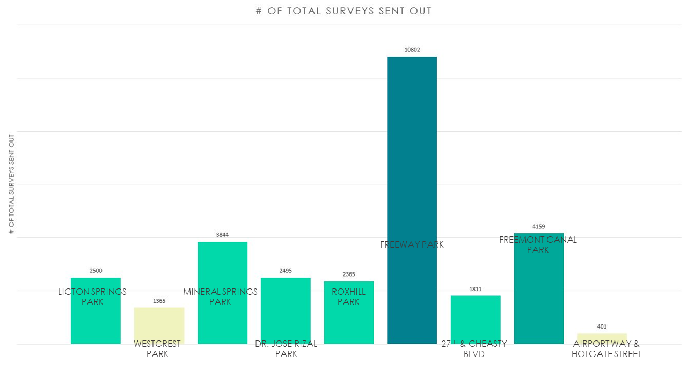
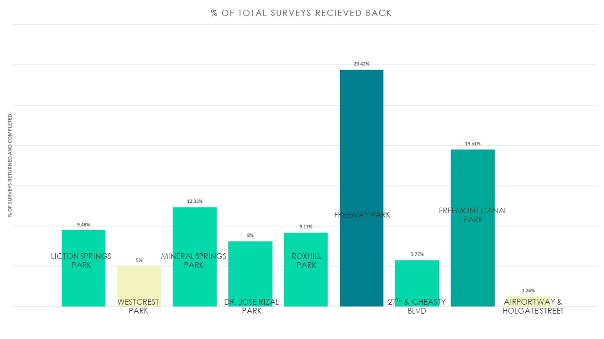

Survey Results
Reliability, and Validity of the Surveys
Because the response rates (Figure 1.2 below) are highly varied, the reliability of responses from each neighborhood will also vary. Data from neighborhoods with higher response rates will be more reliable than neighborhoods will low response rates. For example, Freeway Park and Fremont Canal Park’s data will be quite reliable, while Airport Way and Westcrest Park’s data is not as reliable.
Most of our questions, and therefore the responses received back, have fair validity. However, there were a couple of questions that did not effectively measure what we hoped they would. For example, in Question 7, one of the respondents chose: “I don’t know, I would need more information on the resources available.” Because most individuals chose this response, it was difficult to obtain their exact opinion. It potentially skewed results for this section; the question would have given greater validity had the response just stated, “I don’t know.” Because we did not provide them with detailed information about the program’s resources, individuals may have second guessed their answer, not knowing what other resources we provide. This may have misled respondents to pick this answer instead of other choices provided.
Despite a couple of challenges with the survey, our team is happy with the end results. We garnered public opinion on the boxes, needle disposal and cleanup, and our program. This gave us a unique opportunity to assess customer wants and needs, and will help the program move forward. We will utilize these findings to make changes where they are needed, and build upon our past success. The overall results of the survey are laid out in greater detail in Table 1. The rest of this report breaks down the data from each question.

Figure 1.5: This table represents the response rates from all surveys sent out on October 13th, 2017. The total amount of surveys sent out were 29,742. The total amount of surveys that were returned were 2,563. The areas that recieved the highest amount of surveys were Freeway Park (10,802), Fremont Canal Park (4,159), and Mineral Springs Park (3,844).

Figure 1.6: This table represents the total response rate from the 2,563 surveys sent out. The response rate for the surveys were 8.62%. The areas with the highest response rates were Fremont Canal Park (12.02%), Roxhill Park (9.94%), and Licton Springs Park (9.72%).
Question 1: Prior to receiving this survey, did you know that there was a sharps (needles, syringes, lancets) box in your neighborhood located at ____?
Fremont Canal Park’s neighborhood had the highest percent of customers who knew about their box, at 23.8%. In second, just over 1/5th of Freeway Park’s customers knew about their box. Across all neighborhoods, 73-90% of respondents did not know there was a box installed. Only .2% of customers did not respond to this question, giving question 1 a good response rate. Across all nine neighborhoods, 77.96% of respondents did not know that there was a box installed prior to this survey. However, this question serves a dual purpose of gathering information, and educating the respondent. Now that the customer has filled out the survey and sent it back, they are aware that there is a box close to their house or business, and may be more likely to notice it or utilize it in the future.
Question 2: Have you found the box to be a useful service to your neighborhood? Please rate your response on a scale of 1 to 5, with 1 being the least useful, and 5 being the most useful.
For question 2, most respondents (69.25%) were unsure if the box was a useful service to their neighborhood. This is most likely due to respondents not knowing that the box existed in the first place. 12% of respondents found the box to be very useful, making it the second preferred response. The Dr. Jose Rizal Park Neighborhood had the highest percent of respondents who found the box to be the most useful (21.74%), and the Mineral Springs Park neighborhood had the highest number of respondents who found the box to not be useful (12.97%). Of the respondents that knew a box was installed in their neighborhood (Question 1), 25.83% found it to be very useful. 35.55% of respondents found it to be either somewhat useful or very useful. 49.05% of respondents who knew about the box were still unsure if it was useful.
Question 3: Have you or anyone in your household ever used the box to dispose of personal sharps, or other sharps found around your neighborhood?
Responses to question 3 were very similar across all nine neighborhoods. Almost all respondents had never used the box before, totaling 91.81%. Airport Way had the highest response rate of individuals who had used the box before (for either personal sharps or sharps found around the neighborhood), totaling 6.26%. The Cheasty, Roxhill, and Westcrest neighborhoods all had between 2-5% of respondents utilizing the box for either personal sharps or sharps throughout the neighborhood. Mineral Springs had the greatest number of individuals who never utilized the box, at 93.35%. Of those that used the boxes for personal sharps or sharps they found in the public right of way, 7.59% found it very useful.
Question 4: Do you feel more, or less safe knowing that there is a sharps box installed in your neighborhood? Please rate your response on a scale of 1 to 5, with 1 being less safe, to 5 being more safe.
Overall, responses to Question 4 were mixed. Despite this, a majority of individuals (38.86%) stated that they feel more safe as a result of a box being in their neighborhood. 27.9% overall stated that they feel the same level of safety, and only 5.38% of individuals felt less safe because of the box being installed. The Dr. Jose Rizal Park neighborhood, despite having the highest percent of respondents who found the box to be the most useful (Question 2), had 8.7% of respondents say that they did not feel safe having the box in their neighborhood. Of all nine neighborhoods, this was the highest percent of individuals who stated they felt less safe. However, Dr. Jose Rizal Park also had a high number of respondents who felt more safe (42.03%).
Question 5: Do you support or oppose the city of Seattle helping in sharps disposal and cleanup? Please rate your response on a scale of 1 to 5, with 1 being no support, and 5 being full support.
Question 5 had an overwhelming majority respondents in support of the City (76.32%). Only 3.39% of individuals opposed the City helping with needle disposal and cleanup, with the least support coming from the Roxhill Park neighborhood (6.38%). Despite this, most respondents from Roxhill Park were still in full support, at 71.49%. Across all neighborhoods, there was little variation in opinion for this question. The weighted mean overall for Question 5 is 4.66 out of 5. This means that across all neighborhoods, the average level of support for the City helping with needle cleanup and disposal was 4.66 out of a possible 5.
Question 6: Have you seen a visible change in the number of needles in public right of ways (streets, sidewalks, parks) in your neighborhood since February 2017?
Almost half of respondents overall did not know if there had been a visible change in the number of needles in their neighborhood (47.17%). This makes sense, given the respondents’ answers to Questions 1 and 2. Because most individuals didn’t know a box was installed in the first place and did not know if it was useful, it would be difficult for them to know if there was a change in the number of needles in the surrounding area. Of the other half of respondents, the majority (35.58%) had seen no visible change in the number of needles. Airport Way reported the most drastic change, with 18.75% of respondents feeling there were less needles in the neighborhood.
Question 7: Are there more or less services needed for sharps disposal in your neighborhood?
For this final question, individuals largely wanted more information regarding our program, and they were unsure about what kind of services were needed (65%). As discussed in the overview, this question’s responses may be less valid (due to the way answers were phrased by the surveyor). 21.15% of respondents believed more services were needed, and only 2.65% believed there were less services needed in their neighborhood. Despite it’s lowered validity, this question indicates that more outreach and education needs to be done in the nine neighborhoods. The Sharps Pilot needs to provide them with a better understanding of what the program offers.
Conclusion
Overall, the survey gave our program great insight into what customers think and want. Respondents were generally in favor of our program and the boxes, giving our work continued purpose. It is clear from the survey results that an increase in outreach and education is needed in the communities where boxes are located. An increase in communication about our programs and the services we provide will help customers utilize the boxes more, feel safer, and understand the resources available to them. Future efforts to conduct outreach will be targeted within these neighborhoods, to better serve those residents and businesses near the boxes. We will utilize these results to build upon our program, and expand our services. It is recommended that future surveys be conducted to assess the pilot again. This will show the program’s progress, and allow for continued course correction to better serve our customers.